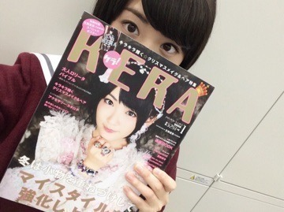
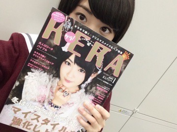
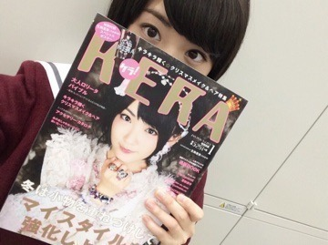
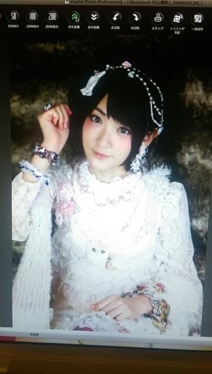
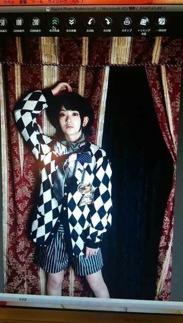

| 2015/11 16 Mon | 自分史上ピカイチの (^-^) |
今日発売のKERA１月号の表紙を飾らせて頂いております
 


お久しぶりのKERA

ファッション誌も久しぶりだったので、すっごく嬉しいですし、光栄でございます(´；ω；｀)❤︎❤︎
自分史上1番かわいくなれた気がします笑

オフショット(^-^)
中々こんな風にラブリーにならないので緊張しました(^-^)
いこまふぁむの皆さんもちろんゲットしましたかぁ？
乃木坂ファンの方も是非手にとってみてくださいねヽ(・∀・)ノ
舞台で共演したニーコさんも久しぶりにKERAに載ってるよん！！
じゅったんも載ってるよんヽ(・∀・)ノ
なんか、AKIRA様もだけど、
ニーコさんもKERAで見てた方だから
こんな風に憧れの方に会ってお仕事出来たという事。
感謝してもっと努力していこうと思います！！

へばなっ☆彡
コメント(745)
2015/11/16 23:35